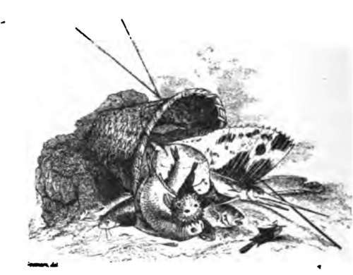
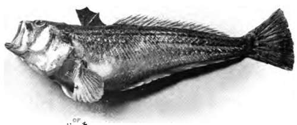
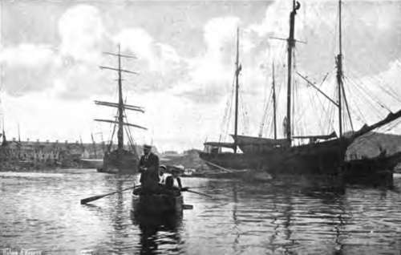
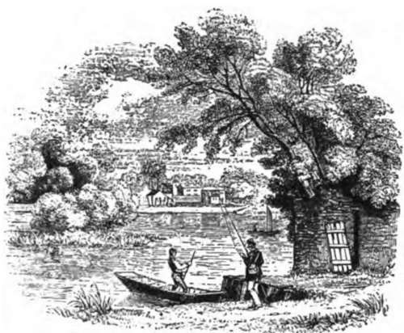

Whiting And Other Fish. Part 3
Description
This section is from the book "Fishing", by Horace G. Hutchinson. Also available from Amazon: Fishing.
Whiting And Other Fish. Part 3
I have here described conger fishing as a night sport, and so indeed it is as a rule, though there is no reason why congers, large enough to give the amateur sport, should not be caught in daylight. I once took one weighing over 6 lbs.- off Hastings pier in the middle of the day, but that was many years ago. Hastings pier is particularly well placed for these fish, which find suitable food and shelter in the small reefs of rocks that run out at intervals from the edge of the shingle to low-water mark or a little beyond. There used in those days to be very fair bass fishing, both from the pier (there was no second pier at St. Leonards then) and from the large stone groyne at the east end of the town; but whether the conditions are still as favourable I know not, for 1 have not fished at Hastings for eleven years. There are, however, signs of great activity among the amateur sea-fishers of that ancient town, and the recent second annual festival marked a distinct departure in the public recognition of the sport as a certain attraction for visitors. Large bass have lately been taken from the beach, a mode of fishing unknown there ten or twelve years ago.
There is a miscellany of flat-fish, such as plaice, dabs, flounders, small turbot, and lemon soles, which are caught by the amateur on inshore grounds, mostly in the summer months and in company with whiting and mackerel, gurnards and weevers. The last-named should be given the order of the boot, since their spiny fins are capable of inflicting fearfully painful wounds. For catching these flat-fish a light rod and fine gut tackle is the best combination; and for bait either lugworms or mussels. The lug-worms are either to be procured of the professional bait-sellers in the neighbourhood, or, failing that source of supply, they must be dug from the sand just above low-water mark. In some places they are very plentiful, though less so than in former years, and there is little difficulty in digging sufficient for the day's fishing. As a rule, however, each of the larger lugworms has to be dug for separately, by following down the tunnel bored by it in the wet sand, and some care must be exercised in procuring the rapidly burrowing worm without breaking its skin. A lugworm is not pleasant to handle, still less attractive is it when it has to be used as a bait; but there are few sea-fish that will not take it at one time or another, and there is no better bait for flat-fish.
The baits and hooks must be small, to suit the mouths of these fishes, and they must lie on or near the sandy bottom. The fish hook themselves, and the angler has only to get them to the boat and remove the hook. It may in passing be remarked that it is easier to get a hook down the throat of a flat-fish than back again, and if the angler has not many spare hooks on gut with him, he will have to exercise some little care and patience if he is to remove the hook from a plaice or turbot without breaking the gut. A disgorger, of the pattern familiar to river fishermen, may help, but I personally prefer a pair of long-bladed scissors, with which, after mercifully killing it first with a blow on the head, the fish is cut open and the hook removed without damage. Most of these flat-fish, and especially plaice, have a knack of doubling up in the water, thereby wofully deceiving the expectant angler in the matter of their weight. They are also, for the most part, smooth to handle, but in the plaice and dab there is a sharp spike in the ventral fin, which those with tender hands would do well to keep clear of.
The actual tackle best to use for these flat-fish is, I think, a light gut paternoster, on which two or three small hooks, also on single gut, are strung at intervals above the small pear-shaped lead. The line is allowed to run through the rod rings until the lead just rests on the bottom; then the rod top is very slightly lowered, and the angler waits for the bite. Given stronger tackle, a sea-rod with large Nottingham reel, heavier lead, larger hooks, and either stout single salmon gut or else treble gut of finer strands, and the angler is equipped for the autumn boat-fishing for cod and whiting as practised at Deal and other resorts in the Channel.
It will be noticed that no practical hints have so far been given with regard to the capture of that king of British salt-water fishes, the bass, but the fact is, the majority of large bass are caught either drifting in estuaries, a mode of fishing to be presently described in some detail, or from piers and harbours, a style of fishing that belongs to the second part of these remarks. Where, however, there are sandy banks amongst the rocks, and lying in about ten or fifteen feet of not too clear water, large bass may sometimes be taken by the following not very sporting method.
The boat is moored fore and aft, so as to remain perfectly rigid and impart no movement to the line, and the line is coiled on the seat, so that it can be flung out without a check. If a rod is used, then sufficient is pulled off the reel. There is no lead, and the single hook, of the size previously shown for pollack, is embedded in a whole pilchard two or three days old. Bass like their dead food somewhat tasty, and not until the pilchard is sufficiently decomposed to be almost disgusting to the sensitive nose has it much chance of attracting a big bass. The manner in which the pilchard is put on the hook for this particular kind of fishing is not very easy to describe, but, briefly, the fish is first decapitated, the head being thrown out as ground bait, and, the hook having been passed twice through the body, a hitch of the gut is taken round the base of the tail-fin, the last-named being finally removed quite neatly with a sharp knife. The headless pilchard now hangs, so to speak, shoulders downwards, and it is heavy enough to carry out the line after being swung backwards and forwards once or twice. It is then thrown after the head, so as to fail on a sand "splat," where bass are known to feed after stormy weather (this method of fishing has little chance of success after a long spell of calm), and I have known my man pitch it with the greatest accuracy thirty or forty yards. The bait having been allowed to sink gently to the bottom, the line is slowly reeled in until it is almost tight, a little slack only being left in the boat. Under favourable conditions, i.e. with the boat properly moored and perfectly still water, this slack ought to lie quiet until a fish attacks the bait.
I have called this mode of fishing unsportsmanlike, because there is a dolce far niente about it offensive to the keen sportsman. For now, look you, the fisherman may light his pipe or eat his luncheon, or even read his paper, so only he keeps an occasional weather eye on that slack line. Presently, if he is in luck, it will be seen to move ever so gently and unobtrusively away through the rod rings, or (with a hand-line) over the edge of the boat. And then he must relinquish his luncheon or his paper and give all his attention to the line. If using a rod, he should grasp it firmly, but without in the least disturbing the progress of the outgoing line, and he will do well, as an extra precaution-the slightest check would send the suspicious fish off in a panic, and he is not yet properly hooked-to point the rod in the direction in which the bass is taking the line, thus making friction practically impossible. The line will go more and more quickly, and at last there will be a run. Then, and not till then, let him smartly raise the top of the rod and strike home. If he is using a hand-line, he need not touch it at all until that last run. Let him keep his hand poised in readiness over it, so as to grasp and strike at the exact moment. And let him, if the bass happens to be a large one, as it usually is if caught in this way, play it very gingerly indeed on a hand-line, for a heavy bass on a hand-line with fine gear is about the most difficult fish to play in our seas. The rod-fisher has an enormous advantage, for the play of the top joint takes a great deal of the strain off the line, and he who uses the line only has to imitate this as closely as possible with the give and take of his hand and arm, which is no easy matter. Let the boatman stand by with the net or gaff and make sure of the fish as soon as possible; a long struggle may be tiring to the bass, but it is infinitely more so to the tackle.
73.- Lesser Weever.
74.- After Bass

Continue to:
- prev: Whiting And Other Fish. Part 2
- Table of Contents
- next: Chapter XXIX. Sea-Fishing From Boats: Bass Fishing